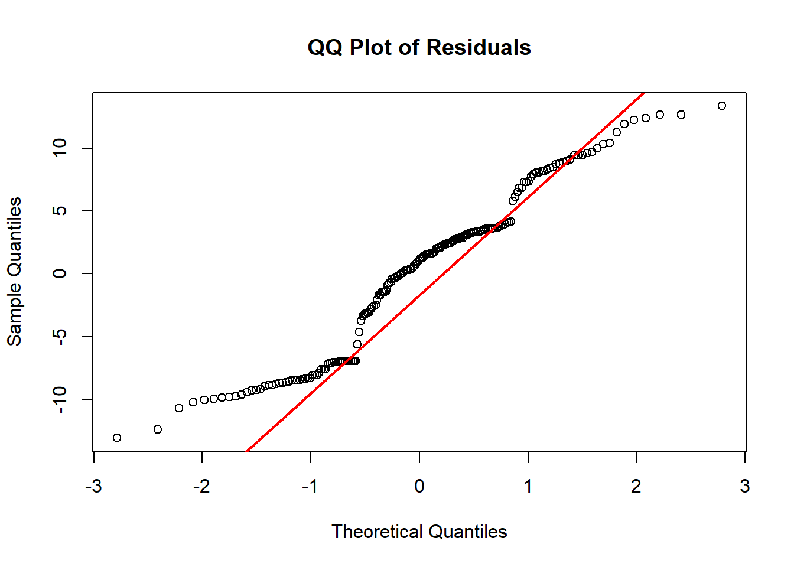
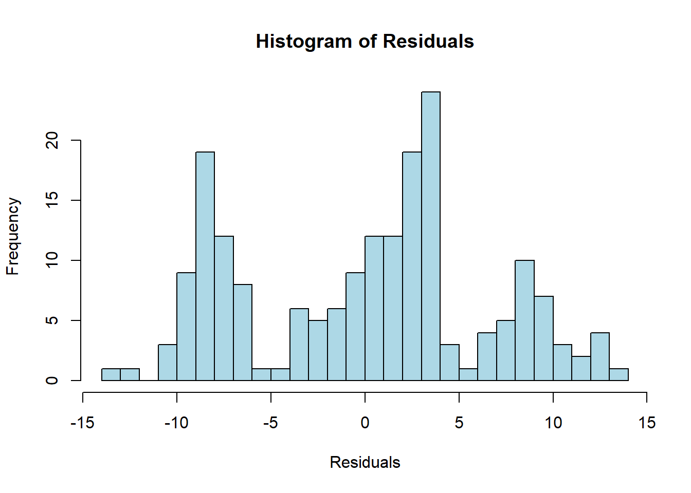
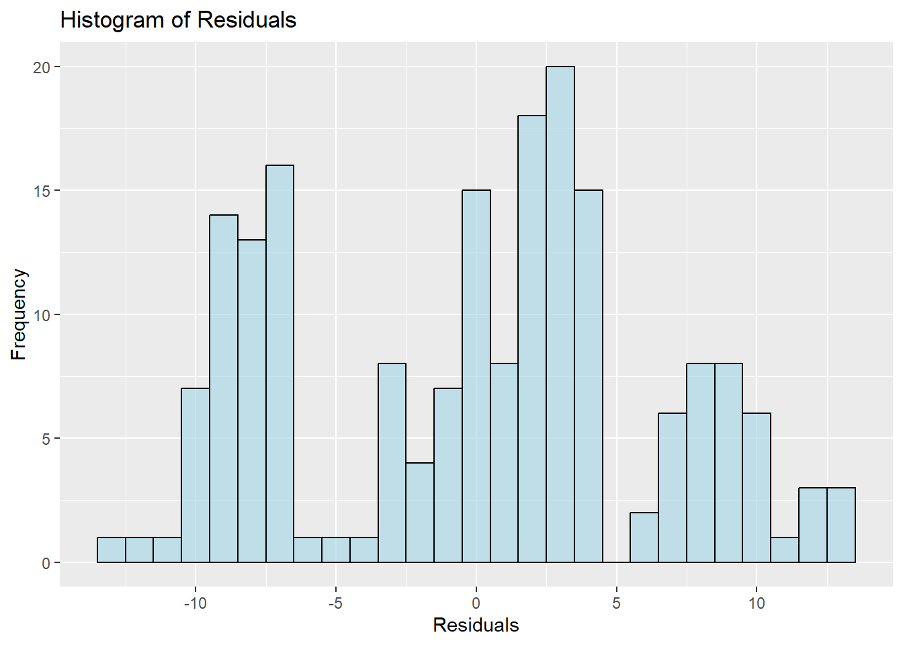
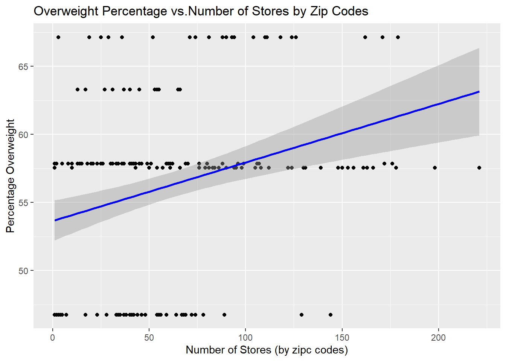

NYC Food Access: Relationship betweeen number of food stores and peprcentage of overweight
# Import 2 datasets for regression analysis
retail_food_stores = read.csv("./data/Retail_Food_Stores_clean.csv")
overwt = read.csv("./data/Overweight by boroughs.csv")Data cleaning
# average the percentage for each year for each borough
overwt_mean = overwt |>
mutate(perc_overwt = word(Percent, 1)) |>
mutate(perc_overwt = as.numeric(perc_overwt)) |>
group_by(Geography) |>
summarize(perc = mean(perc_overwt, na.rm =TRUE))|>
rename(county = Geography)
# group numbers of stores by counties
num_stores = retail_food_stores |>
group_by(borough, zip_code)|>
count() |>
rename (store_num = n,
county = borough)
# join datasets
regression_data = left_join(overwt_mean, num_stores, by="county")
# Pearson's Linear Regression
m1 = lm(perc ~ store_num, data = regression_data)
summary(m1)##
## Call:
## lm(formula = perc ~ store_num, data = regression_data)
##
## Residuals:
## Min 1Q Median 3Q Max
## -13.081 -6.941 1.123 3.611 13.374
##
## Coefficients:
## Estimate Std. Error t value Pr(>|t|)
## (Intercept) 53.647234 0.753496 71.198 < 2e-16 ***
## store_num 0.043013 0.009745 4.414 1.72e-05 ***
## ---
## Signif. codes: 0 '***' 0.001 '**' 0.01 '*' 0.05 '.' 0.1 ' ' 1
##
## Residual standard error: 6.453 on 186 degrees of freedom
## Multiple R-squared: 0.09481, Adjusted R-squared: 0.08995
## F-statistic: 19.48 on 1 and 186 DF, p-value: 1.718e-05# scatter plot for regression
ggplot(data = regression_data, aes(x = store_num, y = perc)) +
geom_point() + # Scatter points
geom_smooth(method = "lm", se = TRUE, color = "blue") + # Add a linear trend line
labs(
title = "Overweight Percentage vs.Number of Stores by Zip Codes",
x = "Number of Stores (by zipc codes)",
y = "Percentage Overweight")## `geom_smooth()` using formula = 'y ~ x'
Assumptions
Normality
# Extract residuals
residuals = resid(m1)
# base R qqplot
qqnorm(residuals, main = "QQ Plot of Residuals")
qqline(residuals, col = "red", lwd = 2)
# histogram
# Base R histogram
hist(residuals,
main = "Histogram of Residuals",
xlab = "Residuals",
col = "lightblue",
border = "black",
breaks = 20) # Adjust 'breaks' for bin width
# Create a data frame for plotting
residual_data = data.frame(residuals = residuals)
# Checking using histogram
ggplot(residual_data, aes(x = residuals)) +
geom_histogram(binwidth = 1, fill = "lightblue", color = "black", alpha = 0.7) + # Adjust binwidth as needed
labs(
title = "Histogram of Residuals",
x = "Residuals",
y = "Frequency" ) 
Overall, the residuals do not appear to follow a normal distribution, as the points consistently deviate from the red line. There seems to be many extreme values around the 2 ends of the distribution.
Homoscedasticity (equal variance)
# residual vs. fitted value
plot(fitted(m1), resid(m1),
main = "Residuals vs Fitted Values",
xlab = "Fitted Values",
ylab = "Residuals",
pch = 20) # Add points
abline(h = 0, col = "red", lwd = 2) # Add a reference line at zero-1.png)
# test for homoscedasticity
bptest(m1)##
## studentized Breusch-Pagan test
##
## data: m1
## BP = 2.7752, df = 1, p-value = 0.09573The test shows assumption is met since p-value < 0.05.
Linearity
# residual plot
# Scatterplot of number of stores and percentage of overweight
ggplot(data = regression_data, aes(x = store_num, y = perc)) +
geom_point() + # Scatter points
geom_smooth(method = "lm", se = TRUE, color = "blue") + # Add a linear trend line
labs(
title = "Overweight Percentage vs.Number of Stores by Zip Codes",
x = "Number of Stores (by zipc codes)",
y = "Percentage Overweight")## `geom_smooth()` using formula = 'y ~ x'
resettest(m1)##
## RESET test
##
## data: m1
## RESET = 1.3978, df1 = 2, df2 = 184, p-value = 0.2498# p-value > 0.05, linearity assumption is not metP-value > 0.05, linearity assumption is not met.
Since 2 of the 3 assumptions are not met, we should change our analysis type from parametric to non-parametric. We can no longer use linear regression with the datasets we have.
Non-parametric test methods
Spearman’s Rank Correlation
Since the assumptions for Pearson’s correlation cannot be all met, we can switch to Spearman’s
cor.test(regression_data$store_num, regression_data$perc, method = "spearman")##
## Spearman's rank correlation rho
##
## data: regression_data$store_num and regression_data$perc
## S = 942586, p-value = 0.04149
## alternative hypothesis: true rho is not equal to 0
## sample estimates:
## rho
## 0.1488406Kendall’s Tau
cor.test(regression_data$store_num, regression_data$perc, method = "kendall")##
## Kendall's rank correlation tau
##
## data: regression_data$store_num and regression_data$perc
## z = 2.0804, p-value = 0.03749
## alternative hypothesis: true tau is not equal to 0
## sample estimates:
## tau
## 0.1135051Both Kendall’s Tau and Spearman’s Rank tests gave p-values < 0.05, indicating that there is a significant correlation between the numbers of food store within each zip code and the percentage of overweight individuals in each borough.
Clustering analysis (In case Spearman’s Rank test is not approved)
# exctract coordinates from retail food store dataset
coords = retail_food_stores |>
select(latitude, longitude)# Determine optimal number of clusters
fviz_nbclust(coords, kmeans, method = "wss") # Within Sum of Squares (elbow method)
set.seed(8105) # For reproducibility
k <- 4 # Replace with the number of clusters from the elbow method
kmeans_result <- kmeans(coords, centers = k, nstart = 25)fviz_cluster(kmeans_result, data = coords, geom = "point", stand = FALSE)